China Employee Termination 2026: Pulse Execution-Lenses Brief for Foreign Employers
Key takeaways
- Foreign employers can improve China termination decisions by applying a fixed set of execution lenses before each action.
- The six lenses are: legal route, local interpretation, evidence coherence, payroll/tax closure, communication discipline, and closure resilience.
- Lens-based governance helps non-local teams see hidden risk quickly without legal overloading.
- Local interpretation must be treated as a core lens, not a side comment.
- This brief is impact-first for business readers; legal depth is secondary in the appendix.
What changed and why this matters now
In cross-border operations, teams often review the same case from different angles but without a common frame. Legal sees route risk, payroll sees settlement risk, HR sees communication risk—yet decisions still drift because there is no shared lens stack. A lens-based approach solves this by forcing each function to answer the same structured question set before progression.
This run rotates to an execution-lenses format (distinct from checkpoint, question, rubric, sprint, and card models) to keep variation while preserving Pulse-style clarity.
Plain-language legal context first
China employer-side termination generally requires a lawful statutory basis plus coherent factual and process execution. Public legal anchors include the PRC Labor Contract Law framework, implementing regulation references (including Decree No. 535 context), and Supreme People’s Court labor-dispute interpretation materials. For foreign operators, the practical takeaway is simple: route legality and execution quality must stay aligned.
Execution lenses operationalize this into fast, repeatable readiness checks.
Pulse execution lenses (impact-first)
Lens 1 — Legal Route Lens
Core question: Does this route fit the actual fact pattern and fallback plan?
Green evidence: route memo with case-specific rationale and fallback.
Red signal: generic reasoning or unresolved route assumptions.
Lens 2 — Local Practice Lens
Core question: Is city-level practical interpretation aligned with route choice?
Green evidence: updated local memo + resolved open points.
Red signal: conflicting local guidance unresolved.
Lens 3 — Evidence Integrity Lens
Core question: Is chronology coherent and source-owned without material contradiction?
Green evidence: reconciled timeline ledger + contradiction closure notes.
Red signal: unresolved contradiction or missing source ownership.
Lens 4 — Payroll Closure Lens
Core question: Are final pay, severance, IIT/social handling, and payment workflow fully ready before communication?
Green evidence: approved payroll/tax packet + payment-proof plan.
Red signal: unresolved payout/tax element.
Lens 5 — Communication Lens
Core question: Is employee messaging controlled and aligned with validated facts?
Green evidence: approved script + briefed spokesperson + escalation script.
Red signal: unbriefed speaker or high script-drift risk.
Lens 6 — Closure Resilience Lens
Core question: Can the case be reconstructed quickly if challenged?
Green evidence: indexed archive + retrieval test pass.
Red signal: incomplete index or retrieval failure.
Lens stack quick view
| Lens | Owner | SLA | Block if red |
|---|---|---|---|
| Legal route | Legal lead | 24h | Yes |
| Local practice | Local counsel coordinator | 48h | Yes |
| Evidence integrity | HR Ops + Compliance | 24-48h | Yes |
| Payroll closure | Payroll + Tax | Same day | Yes |
| Communication | HR lead | Same day | Yes |
| Closure resilience | Compliance + Records | 1 business day | Case close |
Why this helps foreign employers
Lens-based reviews provide a shared diagnostic language across HQ and local teams. Leaders can quickly see where risk is concentrated and why progression is blocked, without reading full legal files.
Practical scenarios
Scenario 1: Legal lens green, payroll lens red
Route is supportable, but final IIT mapping remains open.
Lens decision: hold due to Lens 4 red.
Scenario 2: Evidence lens flips red late
Manager update conflicts with chronology after provisional go.
Lens decision: reopen Lens 3 and pause downstream actions.
Scenario 3: Local lens uncertain in one city
National interpretation is stable, city-level guidance conflicts.
Lens decision: Lens 2 red blocks route progression.
Role-owned SOP (lens governance)
Step 1 — Assign lens owners and backups
Owners: HRBP + Legal + Payroll lead
- Map each lens to primary/backup owners.
Step 2 — Run lens review at transitions
Owners: lens owners
- Mark each lens green/amber/red with evidence links.
Step 3 — Enforce red-block rules
Owners: cross-functional panel
- Prevent progression on red critical lenses.
Step 4 — Publish lens status memo
Owners: HR + Legal + Payroll
- Document status, blockers, and remediation deadlines.
Step 5 — Analyze lens recurrence patterns
Owners: operations governance + compliance
- Track repeated red lenses and update controls.
Required document checklist
- Employee profile and contract context
- Route rationale memo + fallback route
- City-level interpretation memo
- Chronology/source ledger
- Script package and briefing records
- Payroll/severance/IIT/social worksheet
- Settlement/acknowledgment records
- Payment proof artifacts
- Lens status log
- Closure memo + archive index
Exception handling playbook
- Functional disagreement on lens color: evidence-based tie-break memo.
- New fact invalidates green lens: reopen affected lens immediately.
- Owner unavailable: activate backup and preserve SLA.
- Deadline override attempt: document unresolved red lenses with risk acceptance.
- Recurring red in one lens: trigger targeted process redesign.
System implementation notes
- Add lens-state fields (green/amber/red) and evidence links.
- Auto-block downstream tasks on red critical lenses.
- Track KPIs: red-lens frequency, time-to-green, dispute correlation.
- Maintain full audit trail for lens changes.
- Recalibrate lens definitions monthly.
Common mistakes and prevention
- Mistake: lens review treated as optional.
Prevention: mandatory lens check before transitions.
- Mistake: local lens underweighted.
Prevention: hard Lens 2 gate.
- Mistake: payroll lens checked too late.
Prevention: Lens 4 as pre-communication gate.
- Mistake: communication lens assumed green by default.
Prevention: explicit briefing proof requirement.
- Mistake: closure lens skipped after execution.
Prevention: retrieval test required for close.
What to do now
- Deploy six execution lenses across all active China termination cases.
- Assign owner/backups and SLAs per lens.
- Enforce red-block rules for route/evidence/payroll/local lenses.
- Run lens reviews before each major transition.
- Add daily lens status notes for cross-functional visibility.
- Train managers on communication lens requirements.
- Use recurring red-lens analytics to improve workflows.
What to watch next
- City-level changes may increase local lens volatility.
- Case surges may stress payroll lens performance.
- Practitioner updates may tighten evidence-lens expectations.
FAQ
1) Why lenses instead of one overall readiness score?
Lenses show where risk sits and which function must act next.
2) Can one red lens block progression?
Yes, for critical lenses like route, evidence, payroll, and local practice.
3) How often should lens status be updated?
Before each major transition and after material new facts.
4) Who approves final go/hold?
Cross-functional HR, legal, and payroll leads.
5) Is local practice always required?
Yes, because city-level implementation can materially affect defensibility.
6) What is the top avoidable failure?
Proceeding while payroll or evidence lenses are red.
7) How does this improve over time?
Track recurring red patterns and fix root causes.
Legal depth appendix (secondary)
This brief is grounded in official/legal and practitioner materials relevant to employer-side termination operations in China. Core anchors include the PRC Labor Contract Law framework, implementing regulation references associated with Decree No. 535 context, and Supreme People’s Court labor-dispute interpretation materials. Practitioner and payroll-context sources provide practical interpretation for foreign employers. Residual uncertainty remains city- and fact-specific and should be validated with localized professional review for live matters.
Disclaimer
This content is informational only and does not constitute legal, tax, or employment advice.
Sources
- National People’s Congress (Labor Contract Law, English text), accessed 2026-03-06: http://www.npc.gov.cn/zgrdw/englishnpc/Law/2007-12/13/content_1384064.htm
- State Council Gazette reference (implementing regulation / Decree No. 535 context), accessed 2026-03-06: https://www.gov.cn/gongbao/content/2008/content_1124615.htm
- Supreme People’s Court labor dispute interpretation update page, accessed 2026-03-06: https://www.court.gov.cn/fabu/xiangqing/243981.html
- China Briefing, Employee Termination in China, accessed 2026-03-06: https://www.china-briefing.com/news/employee-termination-in-china/
- ICLG Employment & Labour Laws and Regulations: China, accessed 2026-03-06: https://iclg.com/practice-areas/employment-and-labour-laws-and-regulations/china
- Littler ASAP analysis on China employment law developments, accessed 2026-03-06: https://www.littler.com/news-analysis/asap/key-recent-developments-chinas-employment-law-china-us-comparative-perspective
- PwC PRC Individual Income Tax summary, accessed 2026-03-06: https://taxsummaries.pwc.com/peoples-republic-of-china/individual/taxes-on-personal-income
Need local employment support in China?
If you need a compliance-first partner for hiring, payroll, and risk controls in China, China-Payroll.com can help evaluate the right setup.
Image Prompt Pack
Create a 16:9 hero image for article title: 'China Employee Termination 2026: Pulse Execution-Lenses Brief for Foreign Employers'. Scene: global operations team evaluating workforce model options for China market entry. Include motifs: decision matrix, org cha…